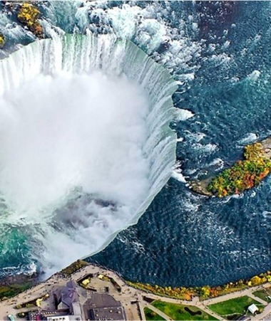

Close
1111Ниагарский водопад, вид сверху. Одно из самых впечатляющих зрелищ планеты!

В галерею
Ниагарский водопад находится на границе между Соединенными Штатами и Канадой и состоит из трех отдельных водопадов — Американского, водопада Фаты и водопада Подковы, который часто называют Канадским из-за того, что он находится на территории Канады.